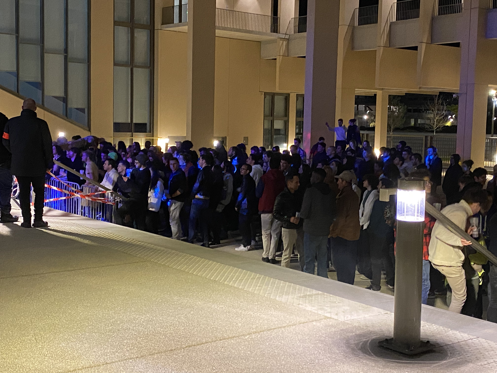

Feedback on the FUPS
Tonight is the FUPS. One of the biggest events at Telecom that invites 4 professional groups and 9 student groups to perform in the patio, as well as the fanfares from different schools. But you already know all that, so let's get to the tea! We infiltrated the FUPS tonight to interview the audience about the event.
We are lucky enough to cross paths with Telecom's biggest star, Louis Petitjean. We recover from the shock of seeing beauty personified and ask him a few questions.
What do you think of the new BDE? Any advice, maybe? - Oooohh, advice? That's tough. I'm not going to say "follow in my footsteps", that sounds pretentious. But good luck for this year, everything remains to be proven! But don't stress too much.
And how is the FUPS this year? - Oh, it's great, they managed to bring back the whole plateau and it's very well done. However, there's just one downside: last year, it was hot and the alcohol was free. But really, the professional stage is very cool and there are plenty of talents on the student stage, so it's all good!
He walks away, blending in the crowd. The world suddenly seems dull, and this horrible reality descends upon us: alcohol is not free...
We also run into Josh, aka Zloti, a sousaphone player in La Bande à Jo.
Why yellow? - Why not? You know, the fanfare is turning 25 years old, we don't have all the answers. Another explanation is that we couldn't call ourselves the Bande à Joe before, but we were the fanfare from the South, so yellow like the sunshine that we bring.
Is it true that you don't have any sheet music? - For the most part, yes, because we can't read. The trombones have arrows. And the percussionists have "pt" for poum tchak, so you can imagine. Only the saxophones can read sheet music. We eventually learned how to read it, after a certain amount of time.
Is it true that there are more than 30 people in the fanfare? - Oh yes, at the beginning of the year, there are a lot of us, but then there are traumatizing trials, like the Bouffe. It's an horrible mess, I have an awful memory of it, he tells us with tears in his eyes. It's a bit of a selection trial.
We also try to talk to Arthur, aka Enzo, a 2A Telecommien.
Do you read the letter? - Yeah, the thing with Ben Salem was cool.
TWhat do you think of the FUPS this year? – Lourd.
Did you eat well? - Not really, I'm going to have some pasta later, I arrived late. I missed the crepes, le seum¹...
A favorite group? - Do not do.
Not the Poilane Soubacrew? - No, I didn't hear them, oh well...
We try to talk to the BDE of Supopt.
Do you have a minute to talk to LH, the Telecom newspaper? - Ah la flemme², sorry.
He leaves. His colleague asks him, "What was that?" and he replies, "Nothing..."
Finally, we go to Enzo, aka Arthur, 1A, FUPSer, Staffer.
When did you start? - We nainAs were recruited in January, by a random message that said "hey, do you know about the FUPS?" so there you go.
What is FUPS to you? Its place in your life? - To me, it's about unexpected experiences. For me personally, there's a bit of regret that I didn't participate enough before, but during the event, I gave it my all and it was amazing, at least until the admin said that all pratos that didn't follow the regulation needed to be taken down. If I had to summarize the day, it would be unexpected thing(s) (with an "s" in parentheses).
Was the work worth the jacket? - Yesterday, I thought it wasn't, but now I think it was.
In summary, the FUPS was really cool, with lots of food and drink associations to enjoy, as well as all the incredible groups. It was an opportunity to meet people and have fun: the Central and Telecom fanfares playing an improvised jam session in the patio, dancing, people from a random letter coming to question you during the party...
Translator's notes
¹ le seum is a slang term for when you are pissed about something, not necessarily a violent feeling, like "ah, rip." for example
² la flemme is used when you don't want to do something because it is tedious, boring, or it takes a bit too much time. For example : "Ah, j'ai la flemme d'aller en cours ce matin".
